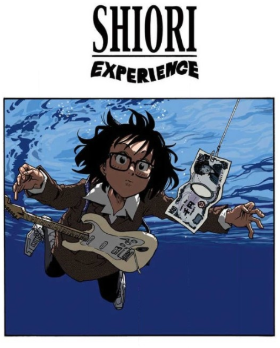

广义来说，电影和漫画都可以定义为：一系列连续的图像。而漫画所区别于电影的一个重要（但绝非唯一）的特征就是没有声音了。那么，要怎样用没有声音的漫画，讲述一个摇滚乐队的故事呢？要怎样向读者呈现，甚至让他们身临其境地感受到演出现场的冲击与震撼呢？SHIORI EXPERIENCE用一流的作画与分镜给出了回答。
为了表现音乐所带来的震撼感，作者大量使用了体验的具象化。这是比喻手法的一种延伸，喻体作为一个实体出现在画面中，与有感受音乐能力的物体（如观众）进行交互后，继续与场景中没有感受音乐能力的物体互动。譬如说，扑面而来的音乐在观众听来好似一阵狂风，作者就让这阵狂风在吹乱观众的头发之后继续与其他布景互动：吹裂墙壁，吹飞桌椅。这种混淆想象与现实的手法大大加强了画面的冲击力，让读者也同样能感受到在音乐蕴含的那股横冲直撞的激情。
而电影和漫画另一个巨大的区别，就是后者每一幅画面的大小不需要完全相同。这一特点也在SHIORI EXPERIENCE中大放异彩，作者对一些特殊分镜恰到好处的运用让故事的体验更加精彩：演奏时出现的大跨页全景分镜是展示上文所述的具象化的绝好手法；用重复的分镜加以微小的画面变化来体现一个生活严格一成不变的学生怎样因为音乐出现动摇；大量的分镜共同构成人物的轮廓来强化该人物的形象。作者也深谙视觉诱导的规律，使用合适的分镜来引导观众阅读的节奏：譬如演奏中的分镜就大量使用符合阅读习惯的Z字形排布增加顺滑感，或让人物时不时跨越多格，在每一格中构成小画面的同时整体构成一个新的大画面。
但是无论手法多么的高明，倘若离开了它那优秀的故事，SHIORI EXPERIENCE也绝不会成为一部今天被我专门推荐的漫画。
失意教师本田紫织，阴差阳错被Jimi Hendrix附身，如果不在一年内谱写自己的音乐传奇就会死。她大可将身体控制权交给Jimi，轻松谱写新的传奇，她却拒绝了这条捷径：重拾高中的音乐梦，她要谱写自己的传奇。东拼西凑一支高中轻音部乐队，磕磕绊绊的传奇之路就这样堂堂开幕。
相对于传统的热血王道漫，SHIORI EXPERIENCE的剧情要写实许多，没有绝境翻盘，没有天降奇遇，只有努力带来的成功。一开始每个成员都似乎天赋异禀，一直到第一次公开演出，乐队才发现自己所谓的天赋其实不过尔尔。黯然退场，濒临解散，痛苦，挣扎，拼命写歌，练习，练习，更多练习，最后成长。艰难的传奇之路遍布荆棘，可以说这部漫画的看点就是怎样在失败后重振旗鼓，逆转乾坤。
可惜这部漫画永远无法动画化的命运早在选材时就已被注定，漫画中大量提到现实中所存在的经典曲目和音乐传奇。谁会一掷千金买下各种传世名曲，就为了做一部动画呢。就算真的有豪门撑腰，又有哪个乐队敢于接下这“超越传奇”的演奏任务呢。这部漫画实在是水平过硬，我担心没有动画化它可能人气将一直低迷，于是就有了这篇推漫。
